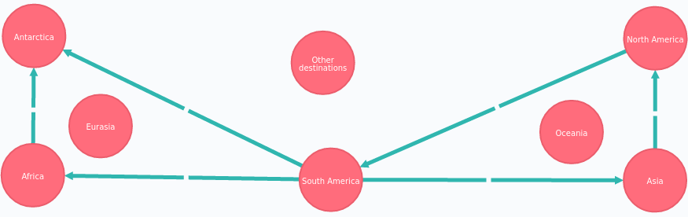

Part 2: Intro
This is part 2 of a two part series. In part 1 I wrote about using Elixir to parse Wikivoyage data dumps and push them into Neo4j. If you want to follow along at home but you have no data locally, then you'll want to go back to that section before reading further. If you've already seen part 1 or if you're only interested in the resulting datastructure and its interrogation, then you can read on from here.

Exploring the Data
To review from the first part of this series, what we have at this point is a simple but reasonably large graph, where nodes are WikiVoyage pages. Most nodes1 have properties for body (i.e. unparsed page content), a title (i.e. the article title), and a page_id. As far as edges, there are at this point only two kinds of relationships:
- the links_to relationship means our graph models how the webpage connects to itself
- the contains relationship gives some extra semantic information about geopolitical regions
In this part of the writeup, we'll interrogate and improve the data model. What kind of questions can be asked and answered using it? First a brief aside about graph visualization and queries..
The web UI for Neo4j is at port 7474 by default or more specifically http://10.0.2.2:7474 in the (unlikely) event you have exactly the same dual-guest vagrant setup as I do. Point your webbrowser there and play around. You can also see some vital statistics about the growth rate of nodes and relationships over time here at the /webadmin endpoint (for instance http://10.0.2.2:7474/webadmin/).
There are several CLI clients available, but I recommend using cycli or ipython-cypher.
The Cypher Query Language is of course used to interrogate the graph, regardless of whether that is happening from Elixir code, from the WebUI, or from the CLI console. There are lots of introductions to cypher out there but getting deep into that is outside of the scope of this write up and I'm still learning myself. CQL is fairly readable though so the reader's intuition, plus this quick reference, plus brief commentary will hopefully suffice.
Curating the Graph
We've reached some kind of critical mass with the model, and it's possible now to use information in the graph to begin to improve the graph itself. I'll be using cypher exclusively for this but keep in mind that most queries are intended to be simple rather than performant.
Finding Continents
Can we discover which nodes (that is, wikipages) correspond to continents? Yes! This is actually kind of a neat trick, because it's not like pages are labeled as continents, we don't have access to that much wikimedia ontology explicitly. Instead, one has to recognize: continents are those nodes which "contain" other nodes but are not themselves contained. A first guess at a naive query might look something like this
// On the right track, but not quite correct
MATCH (continent:WikiPage)-[:contains]->(m:WikiPage)
WHERE NOT ()-[:contains]->(continent:WikiPage
RETURN DISTINCT continent limit 30
The simple query doesn't quite work because of a few warts in the datastructure. We'll fix most of this stuff later in the curation section of this write-up, but for now just to list the short-comings:
- Pages without page_id's are linked to from somewhere but do not actual exist (or have not been parsed yet because
mix loadwas interrupted). These have to be excluded by making sure that thepage_idproperty is set. - Redirect pages are somewhat like continents in that they are "root nodes" that "contain" no other entities on the graph. These have to be excluded using a regex on the page body. Similarly for disambiguation pages.
With all this in mind you can puzzle out a more correct cypher query.
// A better query that takes into account warts of the graph
MATCH (continent:WikiPage)-[:contains]->(:WikiPage)
WHERE NOT (
()-[:contains]->(continent:WikiPage) OR
continent.page_id IS NULL OR
continent.body =~ '.*#REDIRECT.*' OR
continent.body STARTS WITH "{{pagebanner|Disambiguation" )
RETURN DISTINCT continent LIMIT 30
In the screenshot below you can see that amongst the nodes returned as continents there are also nodes representing the pages for "Eurasia" and "Other Destinations". This amount of error seems negligible though, so it's not worth adding special cases to exclude them

Continent Labels
Having found continents, we should label them to avoid such an awkward query in the future. While we're at it, let's make use of the various subparts of this query to improve other graph semantics by adding new labels for :Redirect and :Disambiguation.
// Query to label redirect pages as :Redirect
MATCH (page:WikiPage) WHERE page.body =~ '.*#REDIRECT.*'
SET page :Redirect
RETURN count(page)
// Query to label disambiguation pages as :disambiguation
MATCH (page:WikiPage)
WHERE page.body STARTS WITH "{{pagebanner|Disambiguation"
SET page :Disambiguation
RETURN count(page)
Now we can simplify the previous "find continents" query while we're adding the :Continent label
MATCH (continent:WikiPage) -[:contains]-> (:WikiPage)
WHERE NOT (
()-[:contains]->(continent:WikiPage) OR
continent.page_id IS NULL OR
continent:Redirect OR
continent:Disambiguation )
SET continent :Continent
RETURN DISTINCT continent LIMIT 30
Regional Hierarchies
Page-title data
What about other geopolitical or administrative hierarchies? Can we discover countries, cities, etc? There are a few obvious things we can do here, like taking advantage of patterns in page titles to find counties, provinces, and regions.
// Query to label province pages as :Province
MATCH (page:WikiPage)
WHERE page.title ENDS WITH "(province)"
SET page :Province
RETURN COUNT(page)
// Query to label county pages as :County
MATCH (page:WikiPage)
WHERE page.title ENDS WITH "(county)"
SET page :County
RETURN COUNT(page)
// Query to label region pages as :Region
MATCH (page:WikiPage)
WHERE page.title ENDS WITH "(region)"
SET page :Region
RETURN COUNT(page)
Page-body data
At this point it's becoming clear the Wikivoyage :contains relationship hierarchy is somewhat complicated. For instance since it is the case that Europe (a continent) contains Iberia (a region) which contains Spain (a country), there's no way that a naive query like "which nodes are exactly 1 :contains edge away from a continent" can be trusted to return only countries.
Now certain domain-specific WikiMedia knowledge can be useful, namely article status classification templates, for instance {{UsableCity}}. Note however that up until now we've only been using cypher regexes on title-properties, but to find {{UsableCity}} macros we'd have to match on WikiPage body properties (essentially this is repeatedly grepping like half a gigabyte of text).
I'll continue to use regexes and string functions in Cypher, but in production you should probably be using the full-text lucene search capabilities 2.
// Label pages invoking the {{UsableCity}} macro as :City
MATCH (n:WikiPage)
WITH n, lower(n.body) AS body
WHERE
body CONTAINS "{{usablecity}}" OR
body CONTAINS "{{guidecity}}" OR
body CONTAINS "{{starcity}}"
SET n :City
RETURN count(n)
For other labels we can do likewise and as a result our graph data structure will model the WikiVoyage ontology more and more closely. Surprisingly, the {{UsableCountry}} template macro is not very useful so we skip that in the cypher code below.
// Label pages invoking the {{UsableAirport}} macro as :Airport
MATCH (n:WikiPage)
WITH n, lower(n.body) AS body
WHERE
body CONTAINS "{{usableairport}}" OR
body CONTAINS "{{guideairport}}" OR
body CONTAINS "{{starairport}}"
SET n :Airport
RETURN count(n)
// Label pages invoking the {{UsableRegion}} macro as :Region
MATCH (n:WikiPage)
WITH n, lower(n.body) AS body
WHERE
body CONTAINS "{{usableregion}}" OR
body CONTAINS "{{guideregion}}" OR
body CONTAINS "{{starregion}}"
SET n :Region
RETURN count(n)
Finding Countries
Having correct and fairly complete :Country labels for the graph would be really nice. But based on this page it's clear that identifying countries with the {{UsableCountry}} macro in page bodies is not painting a very complete picture. To improve the model for our toy world (and to demonstrate some other neat things you can do with cypher) we'll have to cheat a bit. The instructions below will download and parse this country list, provided via the OpenTravelData project.
This OpenTravelData stuff is in SQL, and I just quickly massaged it into shape with a bash pipeline. The resulting text file is included in the rapidmind repository. Just for completeness, I'll be explicit about the bash pipeline below.
$ wget -O country_list.sql https://raw.githubusercontent.com/opentraveldata/opentraveldata/master/data/countries/27org/27org_iso_country_list_2007_12.sql
$ cat country_list.sql | grep INSERT | awk -F "\(" '{print $2}'|awk -F ",'" '{print substr($3,0,length($3))}'|awk -F "'," '{print $1}'cat country_list.sql | grep INSERT | awk -F "\(" '{print $2}'|awk -F ",'" '{print substr($3,0,length($3))}'|awk -F "'," '{print $1}'
Luckily for us, a text file with newlines is a kind of CSV file and Neo4j does CSV parsing. You do need to have the CSV file somehow available to the Neo4j server, so if you want to avoid copying a file to your virtual machine or whatever you can use the link I mentioned earlier from the rapidmind repository.
// Query to label country nodes as :Country
WITH 'https://raw.githubusercontent.com/mattvonrocketstein/rapidmind/master/country_list.txt'
AS csv_url
LOAD CSV FROM csv_url AS csv_line
WITH csv_line[0] AS country_name
MATCH (n:WikiPage) WHERE n.title=country_name
SET n:Country
RETURN count(n)
Questions and Queries
Innate Ambiguity
How frequently does ambiguity occur in place names? This is a tricky question to answer exactly with the data but by counting redirects and disambiguation pages we can pretty easily find information that gets us pointed in the right direction. The basic approach is
- Find all pages with mediawiki-style redirects with a regex. The page body will look like
#REDIRECT [[RedirectTarget]] - Find the page each page redirects to, de-duplicate the resulting set and count the elements
No doubt there's a better way to do it, but the cypher I came up with looks like what you see below. The split() calls you see there are taking apart the `[[link]] markdown and the reference to "#" is handling a special-case where some pages redirect to subsections of other pages.
// Counts unique redirection targets
MATCH (page:Redirect)
WITH
page.title as title,
split(split(split(page.body,'[[')[1],']]')[0],'#')[0] as redirect_to
RETURN count(distinct redirect_to)
// Counts disambiguation pages
MATCH (page:Disambiguation) RETURN count(distinct page)
RETURN count(distinct page)
Redirect Edges
Since we've already written most of the correct query in the previous section, why not be opportunistic and add :redirects_to edges to the model? It's tempting also to copy attributes and labels "across" the redirection edge, but I'm trying to avoid it until there's a specific use-case in mind (probably it would improve certain queries but be to the detriment of others).
MATCH (source:Redirect)
WITH
source.title as title,
split(split(split(source.body,'[[')[1],']]')[0],'#')[0] as target_title
MATCH (target:WikiPage {title: target_title})
CREATE UNIQUE (source)-[:redirects_to]->(target)
RETURN count(*)
Popular Topics
What can we say about nodes (pages) with large numbers of out-going links? Apriori, there are a a few obvious guesses: these pages might represent meta-pages, very large land-masses, or very well-documented (and thus popular?) travel destinations. You can see several such nodes in the output of the cypher query below:
// Query for finding the top-ten nodes by link-count
MATCH (n)-[r:links_to]-()
RETURN n, count(r) as rel_count
ORDER BY rel_count desc
LIMIT 10
Taking for instance the meta-page for the UNESCO World Heritage List here are some interesting queries:
// Query to count the out-going links of a particular node
MATCH (page)-[rel]->()
WHERE page.title='UNESCO World Heritage List'
RETURN count(rel)
// Query to graph part of the neighborhood in the WebUI
MATCH (page:WikiPage)-[rel]->()
WHERE page.title='UNESCO World Heritage List'
RETURN rel LIMIT 10
Edge Weights
Also in the previous section, we talked about a type of naive query that could not possibly work for finding countries 1 step beneath continents and cities 1 step beneath countries. What we can do however is this: update "contains" edge in the graph to have a "containment-depth" property. Edges where containment-depth==1 may not necessarily be countries, but this information ought to be at least heuristically useful in some other circumstance.
// Placeholder
Other Ideas
It's quite tempting to see what else can be done to make the data structure more complete, perhaps by using open travel data or by enhancing the dump parser to understand the ##Get In and ##Get Out sections of wikivoyage pages to make a "transport-connection" relationship type. To be continued..
Placeholder